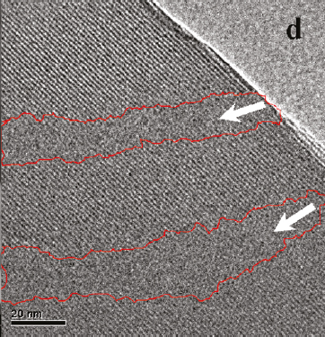
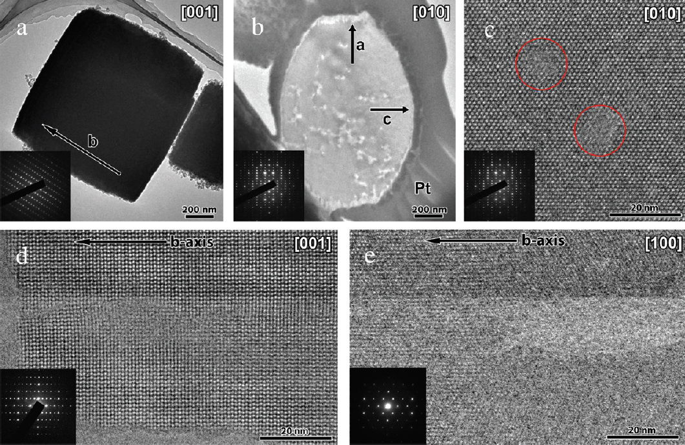

Research interests in catalytic materials group are mainly focused on following:
(1) Synthesis, charactrization and catalysis test of microporous zeolites;
(2) Synthesis, charactrization and catalysis test of mesoporous zeolites;
(3) Synthesis, charactrization and catalysis test of porous polyligand catalysts;
(4) Highly efficient conversion of biomass;
(2) Synthesis, charactrization and catalysis test of mesoporous zeolites
Crystalline zeolites with pore sizes typically at 0.4-1.2 nm are one of the most useful catalysts in industrial processes such as oil refining and organic synthesis etc, due to their large surface area, high adsorption capacity, uniform and intricate channels, high thermal and hydrothermal stabilities, and well-defined micropores with excellent shape-selectivity in catalysis. However, relatively small and sole micropores in zeolites strongly influence the mass transfer in catalysis, which severely limit their catalytic performance. Particularly, the bulky reactants are difficult to contact with active sites in such small micropores of zeolites. On the other hand, ordered mesoporous materials exhibit low hydrothermal stability and acidity compared with zeolites crystals, which is mainly attributed to the amorphous nature of the mesoporous walls. Combination of advantages of mesoporous materials and zeolites crystals instead of upgrading their individual performances, mesoporous zeolites have been synthesized by addition of mesoscale templates in the synthesis of zeolites and shown excellent catalytic performance.
In our group, we are devoted to prepare the mesoporous zeolites using cheap templates. Recently we have successfully synthesized (i) mesoporous Beta zeolite using cationic polymers; (ii) mesoporous Y zeolite using organosilane and (iii) mesoporous ZSM-5 zeolite with aligned mesoporous channels using polymers.
|
---Angew. Chem. Int. Ed., 2006, 45, 3090-3093 |
 |
---J. Am. Chem. Soc.,2011, 133, 15346-15349 |
 |